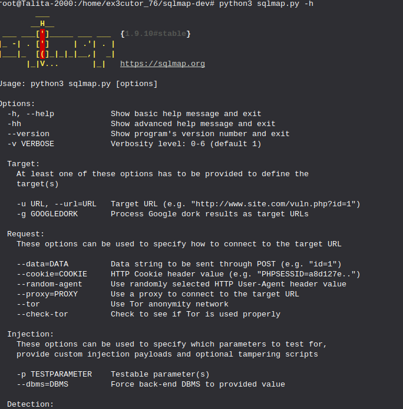
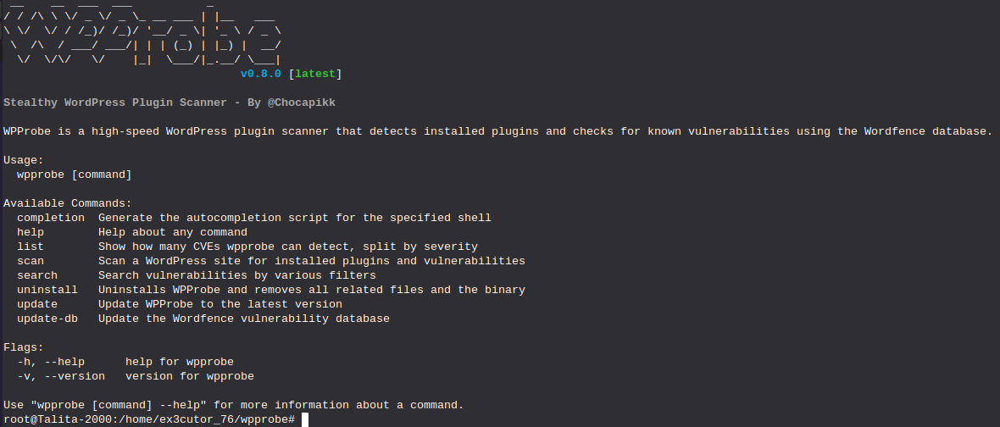
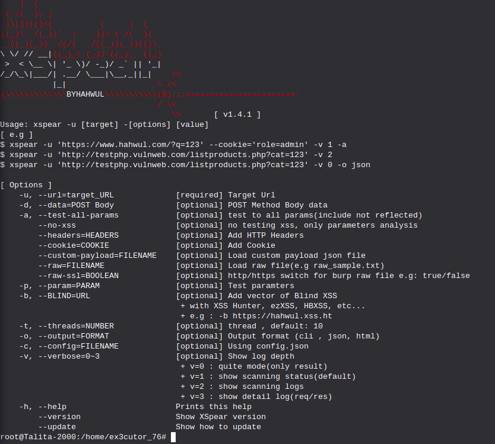

Ferramentas para teste de penetração e vulnerabilidades:

A primeira ferramenta é o nmap, ele é uma ferramenta bem simples de varredura e scan de
portas TCP/IP e UDP, e aqui nesta imagem por exemplo fiz um scan simples do IP do Youtube.
Como instalá-lo no terminal: abra o terminal e use esse comando: sudo apt install nmap
Se quiser saber se realmente está instalado use: nmap -h (Com esse comando te mostrará outros comandos que você pode usar com o nmap)

O sqlmap serve para testes de injeção SQL em alguns sites e até mesmo explora algumas falhas de injeção SQL
e assumir banco de dados e nesta imagem de exemplo apenas usei o -h para que ele me mostre outros comandos que posso
utilizar.
Como instalar o SQLmap:
Abra o terminal e use esse comando: git clone --depth 1 https://github.com/sqlmapproject/sqlmap.git sqlmap-dev
Use o comando "ls" para listar e se caso tiver um "sqlmap-dev" perfeito.
Para usar é só usar: cd sqlmap-dev
E agora para finalizar use: python3 sqlmap.py -h (Sempre recomendo usar "-h" para que mostre outros comandos
porque com "-h" você estaria pedindo ajuda para a ferramenta.)

O nikto é uma ferramenta perfeita para scaneamento de vulnerabilidades de servidores web, essa ferramenta
simplesmente busca falhas conhecidas, configurações inseguras e versões vulneráveis de alguns software's, nesta foto
por exemplo eu utilizei o -h para me mostrar os comandos que podem ser usados nessa ferramenta.
Como instalar o nikto:
Abra o terminal e utilize esse comando: git clone https://github.com/sullo/nikto
Após isso use: cd nikto/program
E para usar: ./nikto.pl -h (O -h irá te mostrar alguns comandos e se caso quiser usar esses comandos
substitua o "-h" por algum desses comandos.)

O WPProbe é um scanner de plugins do wordpress que muitas vezes esses plugins são desatualizados e claro contém algumas vulnerabilidades
e bem com esse WPProbe é perfeito para captar essas vulnerabilidades e nesta imagem de exemplo usei -h (Como sempre) para mostrar alguns comandos.
Como instalar o WPProbe:
Entre no terminal e use: git clone https://github.com/Chocapikk/wpprobe
Entre no repositório: cd wpprobe
Após isso use: go mod tidy
Construa o binário com esse comando: go build -o wpprobe
Comandos para você usar que são úteis:
Scan básico: ./wpprobe scan -u (URL do site)
Scan com força bruta (Literalmente olha o site inteiro): ./wpprobe scan -u (URL do site) --mode bruteforce
Scan com modo hibrído (um equilibrio de furtividade e minuciosidade): ./wpprobe scan -u (URL do site) --mode hybrid

A ferramenta wafw00f é uma ferramenta que detecta se um site está protegido por algum WAF (Web application
Firewall) e quando possível identifica qual fornecedor/serviço de WAF (Um exemplo é o Cloudflare ou o Azure da microsoft) e
nessa imagem de exemplo usei o -h para me mostrar os comandos que posso utilizar.
Como instalar:
Abra o terminal e use: python3 -m pip install wafw00f --break-system-packages
E para usar a ferramenta use: wafw00f (URL do site)
E pronto com esse comando você faz um scan básico. (Se quiser se aprofundar use "-h" que mostrará comandos)
Bem, nessas ferramentas eu não mostrei de forma em prática porque eu prefiro deixar vocês praticarem, para sentirem a experiência
de estar em um terminal utilizando comandos como esses, e sim só deixei ferramentas que tenho conhecimento e que sei utilizar.

O XSpear é uma ferramenta para testes de XSS, na imagem acima por exemplo utilizei "-h" como sempre
para me mostrar alguns comandos que posso usar na ferramenta.
Como instalar o XSpear:
Primeiro abra o terminal e use o comando: gem install XSpear
Após isso use o comando: gem install XSpear-{version}.gem (Esse "version" seria meio que uma versão do XSpear, abaixo estará um exemplo de como ver a versão para a instalação.)

E após isso clicar no texto em azul escrito como "latest"

Após isso irá aparecer esta tela que logo irá mostrar algumas versões e você terá que baixar o arquivo: XSpear-1.4.1.gem
Agora adicionar essa linha no seu Gemfile: gem 'XSpear'
E bem pode aparecer um erro mas relaxa, agora só baixar algumas dependências:
para baixar as dependências use: gem install colorize
gem install selenium-webdriver
gem install terminal-table
gem install progress_bar
E para usar use: bundle
Se caso o seu for igual o meu que também deu errado mas consegui instalar normalmente use: XSpear -h
E assim é a instalação do XSpear que sim admito ter sido bem complicado pra mim e se foi confuso pra você sinto muito e posso tentar melhorar.